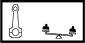

MAIN BEARINGS
- Path
- Technical Data > 10 ENGINE > 1024 CRANKSHAFT AND FLYWHEEL > MAIN BEARINGS
- Kind
- technical data / specifications
- Applies to
- engines: 2.0 JTS, 3.2 V6, 1.9 JTD 16V; all production periods
- Interactive page
- https://sloeber94.github.io/elrnDB-aGt/en/#/125000102
Applies to: engines: 2.0 JTS, 3.2 V6, 1.9 JTD 16V; all production periods
Maximum difference in weight between connecting rods (g.) | Validity |  | ||
|---|---|---|---|---|
± 5 | 2.0 JTS 3.2 V6 | |||